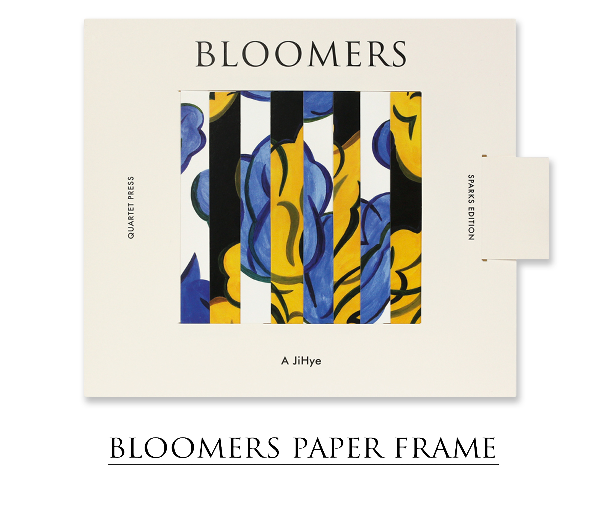

Quartet Press is founded by Sparks Edition (Joonoh Jang, Jihye A) in order to share artistic experiments and provide an enjoyable experience to the public. Quartet Press is designated to encourage creators with their own motive and source of creativity.
Please contact us through email. quartetseoul@gmail.com